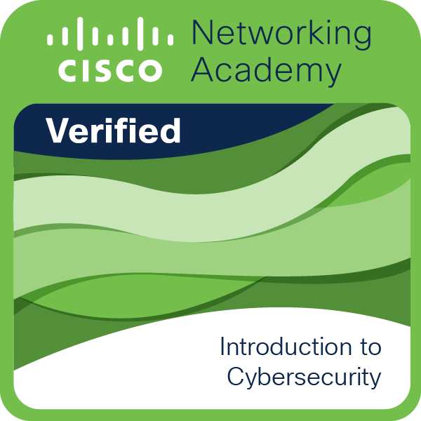
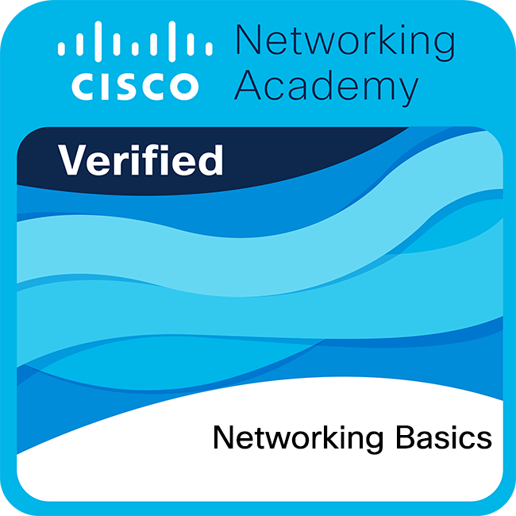
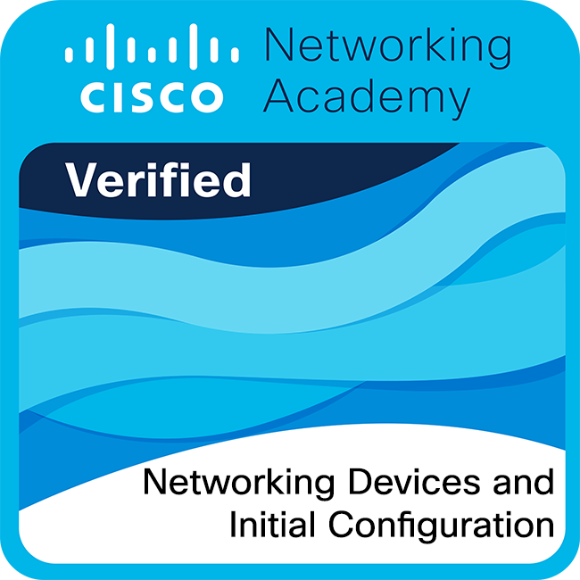
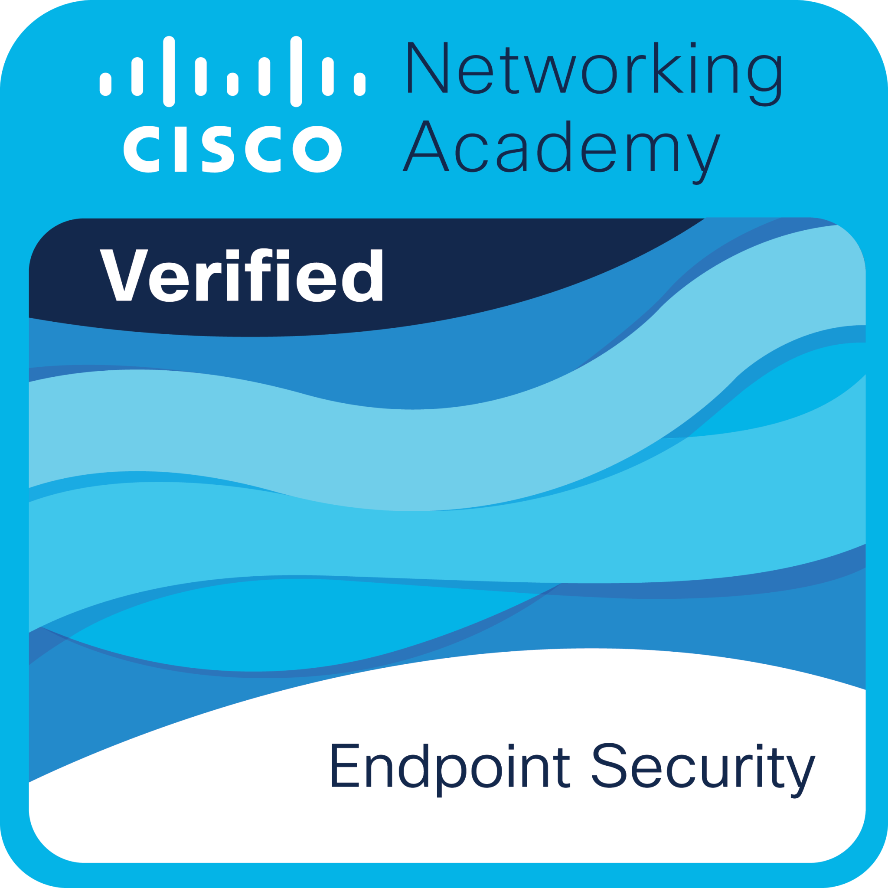
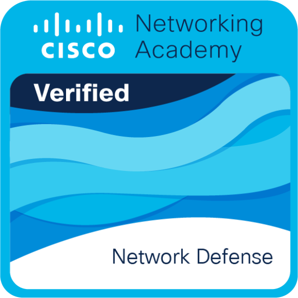
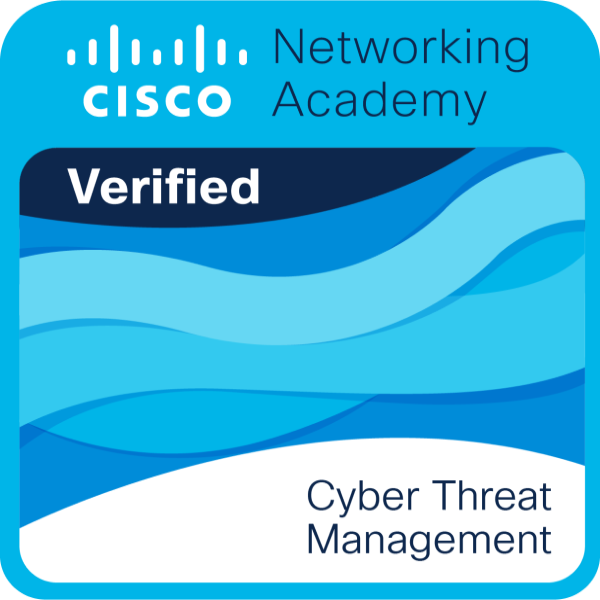
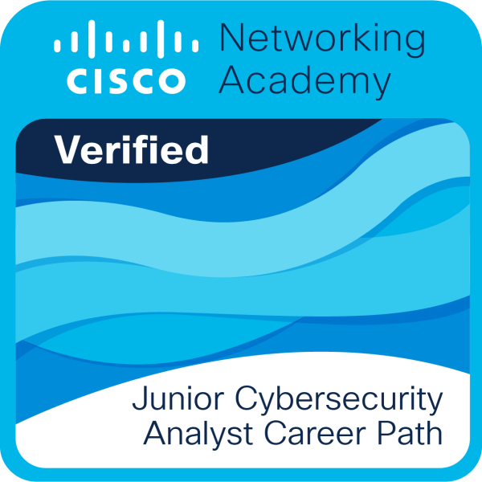

Mis Certificaciones
Evidencias de formación continua, desarrollo de habilidades técnicas y reflexiones sobre el aprendizaje en ciberseguridad.
Evidencias de formación continua, desarrollo de habilidades técnicas y reflexiones sobre el aprendizaje en ciberseguridad.
El camino recorrido a través de esta ruta de aprendizaje en ciberseguridad ha sido una experiencia profundamente enriquecedora. A nivel personal, cursar estas certificaciones ha cultivado en mí una notable resiliencia y una estructuración del pensamiento crítico sumamente enfocada en la resolución de problemas lógicos bajo escenarios adversos. Enfrentar temas desconocidos, asimilar terminología compleja y entender los riesgos digitales cotidianos me ha inculcado una fuerte higiene digital y un sentido ético inquebrantable ante el poder que otorgan las herramientas defensivas y ofensivas. Este proceso no solo alimentó mi curiosidad intelectual, sino que transformó mi percepción sobre la seguridad, convirtiéndola en un estilo de vida basado en la prevención y la constante autoevaluación.
En el ámbito académico, esta formación especializada ha representado el complemento perfecto para mis estudios de ingeniería en la Universidad Politécnica de San Luis Potosí. Ha servido como un puente robusto que vincula de manera directa la teoría abstracta de las aulas con escenarios de infraestructura de la vida real. Conceptos complejos como el direccionamiento de subredes, la encapsulación del modelo OSI o el funcionamiento lógico de los sistemas de prevención de intrusiones pasaron de ser esquemas gráficos en libros a realidades tácticas configuradas por mí mediante CLI y herramientas de monitoreo. Esta trayectoria ha elevado mis estándares de calidad en investigación, análisis documental y síntesis técnica, permitiéndome consolidar una formación sumamente competitiva y actualizada bajo estándares de la industria tecnológica.
Desde la perspectiva profesional, haber cursado y obtenido estas certificaciones me dota de un perfil técnico sumamente competitivo, preparado para incorporarse directamente en operaciones de un SOC (Security Operations Center) o en auditorías autorizadas de seguridad. Las competencias adquiridas me facultan para realizar el endurecimiento de sistemas operativos (hardening), diseñar reglas robustas de firewalls, implementar VPNs seguras y analizar el comportamiento malicioso en la red utilizando marcos avanzados como MITRE ATT&CK. Este conjunto de conocimientos técnicos y prácticos me posiciona como un activo sumamente valioso para cualquier corporación que busque proteger sus activos de información crítica, con la madurez necesaria para proponer mitigaciones efectivas ante las amenazas digitales modernas.

Mi incursión formal en la ciberseguridad comenzó con este curso introductorio, el cual sirvió como un catalizador fundamental para mi crecimiento académico y personal. La experiencia en este proceso de formación fue sumamente esclarecedora, permitiéndome desmitificar la seguridad informática y comprenderla no solo como una disciplina técnica, sino como un pilar fundamental en la sociedad digital contemporánea. A lo largo de la instrucción, profundicé en los conceptos esenciales de la triada CIA (Confidencialidad, Integridad y Disponibilidad), los vectores de ataque más comunes y las tácticas de ingeniería social. El mayor reto al que me enfrenté fue asimilar la enorme amplitud de la terminología de seguridad y desarrollar un pensamiento crítico para identificar vulnerabilidades humanas y de políticas organizacionales. En el ámbito profesional, este aprendizaje se traduce en la capacidad de evaluar riesgos básicos e implementar medidas de higiene digital esenciales en cualquier entorno laboral. Desde una perspectiva muy personal, este curso encendió en mí una genuina pasión por la seguridad defensiva. Me enseñó a ver la tecnología desde la óptica de la resiliencia y la prevención, sentando las bases teóricas de mi perfil técnico y motivándome a continuar capacitándome. Es una formación sumamente recomendada para cualquier persona que desee comprender los cimientos del ecosistema de ciberseguridad actual, ya que proporciona una visión panorámica indispensable antes de adentrarse en especializaciones técnicas más complejas.

Comprender el funcionamiento de las redes es la base absoluta sobre la cual se construye toda la ciberseguridad. Este curso abarcó la arquitectura y protocolos de red, incluyendo el modelo OSI de siete capas, el modelo TCP/IP, direccionamiento IPv4 e IPv6, y protocolos clave de resolución y transmisión de datos. La experiencia de formación fue exhaustiva y sumamente demandante desde el punto de vista conceptual. Uno de los mayores retos fue dominar la lógica del direccionamiento IP y la técnica de división de subredes (subnetting), lo cual requiere una notable precisión matemática y lógica para el diseño eficiente de topologías. Entre los aprendizajes clave destaca el flujo íntimo del encapsulado de datos y cómo interactúan las capas lógicas desde la aplicación hasta el medio físico. En el plano profesional, estos conocimientos son vitales para diagnosticar vulnerabilidades de infraestructura, analizar paquetes de tráfico sospechoso con analizadores como Wireshark y entender cómo se propaga una amenaza a través de una red corporativa. En lo personal, este curso me infundió una enorme confianza técnica; logré comprender que no se puede proteger adecuadamente una infraestructura si no se entiende a la perfección cómo se comunican sus componentes. Considero que este módulo fue el punto de inflexión en mi carrera académica, convirtiendo abstracciones teóricas en conocimientos lógicos aplicables en escenarios de la vida real. Es una certificación robusta que me permitió consolidar mis habilidades técnicas y sentar las bases indispensables para configurar defensas de red avanzadas.

Este módulo práctico me permitió transicionar de la teoría de redes a la interacción directa con el hardware que las hace posibles. La formación se centró en la configuración inicial y seguridad de routers y switches utilizando la interfaz de línea de comandos (CLI) de Cisco (IOS). Los aprendizajes clave incluyeron la segmentación de redes mediante VLANs, la configuración del acceso remoto seguro mediante SSH, y la implementación de protocolos de seguridad en puertos (Port Security) para evitar accesos físicos no autorizados. El principal desafío en este proceso fue adaptarme a la sintaxis rigurosa de la CLI de Cisco y desarrollar la agilidad mental para estructurar configuraciones complejas sin cometer errores que pudieran dejar inoperante una red. Profesionalmente, esta certificación me capacita para desplegar equipos de comunicación con configuraciones robustas de seguridad desde el primer día, minimizando la superficie de ataque inicial en cualquier empresa. A nivel personal, este curso fue sumamente gratificante; la experiencia de escribir comandos y ver de inmediato su efecto físico bloqueando intentos de intrusión lógica o física reforzó mi entendimiento práctico del control de accesos. Me demostró que la seguridad es una disciplina de configuración meticulosa donde el más mínimo descuido puede abrir una brecha crítica. Esta experiencia práctica fortaleció notablemente mi capacidad de resolución de problemas bajo condiciones de configuración de red en tiempo real.

La protección de los dispositivos individuales —computadoras de escritorio, laptops, servidores y dispositivos móviles— es a menudo la primera línea de defensa activa contra los ciberataques. Este curso abordó las metodologías para robustecer la seguridad en terminales mediante el uso de criptografía, control de acceso estricto, gestión de actualizaciones de software, firewalls locales y herramientas avanzadas de detección y respuesta en endpoints (EDR). La experiencia formativa me permitió analizar críticamente la seguridad desde el punto de vista del sistema operativo (Windows y Linux). El mayor reto fue encontrar el equilibrio adecuado entre un nivel óptimo de protección técnica y la productividad del usuario final, entendiendo que las políticas de seguridad demasiado restrictivas pueden entorpecer la operación diaria. Como aprendizaje clave, interioricé el principio de mínimo privilegio y el endurecimiento (hardening) de sistemas operativos. En mi vida profesional, esto me capacita para definir y desplegar configuraciones seguras en flotas de dispositivos corporativos, garantizando que el compromiso de un único dispositivo no demerite la integridad general de la infraestructura informática de una organización. Aprendí a valorar el papel crucial que juega el hardening del sistema operativo en la resiliencia global de cualquier entorno empresarial.

Enfocado en la protección integral de la infraestructura de red corporativa, este curso fue una inmersión profunda en las tecnologías y metodologías de defensa perimetral y detección de incidentes. Se estudiaron a fondo el funcionamiento de los firewalls de próxima generación, sistemas de detección y prevención de intrusos (IDS/IPS) como Snort, redes virtuales privadas (VPNs) seguras y el monitoreo mediante plataformas SIEM. El proceso de formación fue fascinante pero complejo. El mayor reto técnico fue comprender cómo optimizar y redactar firmas y reglas de firewall precisas para filtrar el tráfico malicioso sin causar congestiones o generar un volumen inmanejable de alertas falsas (falsos positivos). Como aprendizaje clave, asimilé la importancia del diseño de redes por zonas (segmentación con DMZ) y la visibilidad constante de los logs de seguridad. Profesionalmente, esta certificación me otorga las competencias necesarias para implementar políticas de seguridad a gran escala, monitorear de forma activa el tráfico en un entorno empresarial y mitigar ataques en tiempo real. A nivel personal, este fue uno de los cursos que más disfruté, ya que me permitió experimentar el rol del defensor (Blue Team) y apreciar la complejidad táctica de mantener un perímetro seguro frente a adversarios constantes. Es una certificación indispensable que unifica la teoría de redes con la defensa activa del perímetro organizacional.

Esta certificación me introdujo en el ámbito de la inteligencia de amenazas (Threat Intelligence) y la gestión proactiva de riesgos. A lo largo del curso se analizaron marcos de referencia reconocidos mundialmente como el modelo MITRE ATT&CK, metodologías de análisis de vulnerabilidades mediante la métrica CVSS, y los protocolos de respuesta y mitigación de incidentes. La experiencia de aprendizaje requirió una mentalidad altamente analítica y estratégica. El reto más significativo fue dominar el mapeo de tácticas, técnicas y procedimientos (TTPs) de grupos de APTs (Advanced Persistent Threats) y comprender cómo transformar datos de crudos de amenazas en inteligencia accionable para la organización. Entre los aprendizajes clave destaca el ciclo de vida del análisis de vulnerabilidades y la estructuración de informes técnicos para la remediación de parches. En el ejercicio profesional, estos conocimientos me permiten diseñar planes estratégicos de ciberseguridad adaptados a los riesgos específicos de una empresa y responder de forma estructurada ante una brecha de seguridad. En el plano personal, este curso amplió enormemente mi perspectiva; comprendí que la ciberseguridad no consiste únicamente en configurar software defensivo, sino en planificar la resiliencia del negocio, anticipándose activamente a los movimientos de los atacantes cibernéticos mediante inteligencia. Ha sido una de las capacitaciones más estratégicas que he tomado durante mi desarrollo profesional en esta rama.

Este programa de certificación representa la culminación integradora de los módulos previos, alineando las competencias individuales hacia las demandas operativas reales de un Centro de Operaciones de Seguridad (SOC). Durante la formación se profundizaron aspectos como el flujo de trabajo de un analista SOC de nivel 1, la gestión de alertas de incidentes, el análisis forense digital básico en memoria y sistemas de archivos, y el cumplimiento de normativas de seguridad globales. El proceso de formación fue riguroso y demandante, simulando la presión y la toma de decisiones rápidas que caracterizan el entorno de un SOC real. El principal reto consistió en coordinar de forma integral conocimientos de redes, sistemas operativos y amenazas para realizar un triaje veloz y efectivo de incidentes de seguridad sin perder de vista los protocolos establecidos. Como aprendizaje clave, dominé la estructura metodológica de contención y erradicación de amenazas. Profesionalmente, esta certificación me posiciona como un candidato idóneo para desempeñarme en equipos de respuesta rápida y monitoreo activo, aportando valor inmediato en la mitigación de brechas. En lo personal, este logro significó un paso gigante en mi consolidación académica, validando mi capacidad de análisis bajo estándares profesionales del sector de la seguridad informática. Me ha brindado la preparación idónea para asumir retos del mundo empresarial con total confianza y responsabilidad.

Adentrarme en el hacking ético fue una de las experiencias más desafiantes y satisfactorias de mi trayectoria académica. Este curso me permitió explorar la ciberseguridad desde la perspectiva ofensiva (Red Team), aprendiendo a identificar y explotar vulnerabilidades de manera autorizada para fortalecer las defensas de un sistema. A lo largo de la formación dominé las fases del pentesting: reconocimiento, escaneo de red con herramientas como Nmap, explotación de fallas del sistema con Metasploit, vulneración de aplicaciones web con Burp Suite, y escalación de privilegios. El mayor reto técnico fue comprender a bajo nivel cómo se estructuran los exploits y cómo burlar ciertos controles defensivos sin afectar la estabilidad de los servidores bajo prueba. El aprendizaje clave fue asimilar que la mejor defensa es una gran ofensa técnica; solo comprendiendo cómo opera un atacante se pueden diseñar mitigaciones realmente infalibles. En mi desarrollo profesional, esta capacitación me faculta para realizar auditorías de seguridad exhaustivas y reportar hallazgos de forma ética y estructurada para prevenir incidentes del mundo real. A nivel personal, este curso fue estimulante; alimentó mi curiosidad intelectual y me enseñó que el hacking es una disciplina de paciencia, perseverancia y una profunda ética profesional. Consolidó mi enfoque integral de la seguridad informática, capacitándome para evaluar defensas con una mirada verdaderamente crítica y analítica.